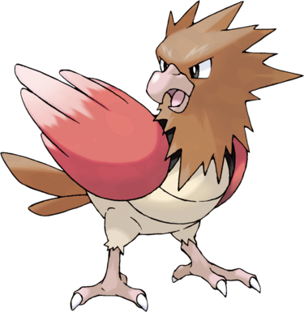

Petit et rapide, Piafabec est un oiseau à la mine revêche doté d'un caractère très désagréable. D'une lâcheté à toute épreuve, il vit avec ses congénères dans des clans d'une trentaine de membres. Ils attaquent les différents Pokémon vivants dans leur territoire et les Dresseurs de passage. Il a deux ailes rouges et des plumes brunes sur son dos. Son ventre est gris. Ses pattes griffues ont trois doigts.